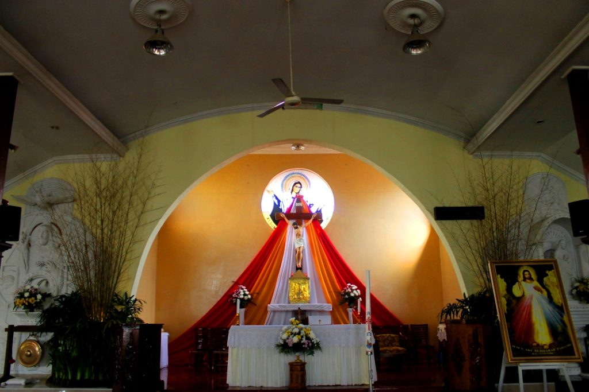
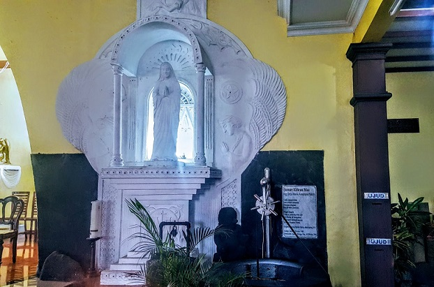

Keunikan bangunan dari Gereja Santa Maria Assumpta Pakem adalah di dalam Gereja ini terdapat sumur untuk mengambil air suci yang menjadi tempat tujuan para peziarah dan ukurannya yang tidak sesuai dengan penampilannya dari luar. Dari luar, Gereja ini tampak lebih kecil, namun saat masuk ke dalam, Gerejanya tampak lumayan besar. Sumur tersebut dinamai Sumur Kitiran Mas dan Bunda Maria sebagai pelindung disebut Sang Kitiran Kencana. "Kitiran Mas" merupakan nama lain dari Semar yang melambangkan manusia papasekaligus dewa penyelamat saat terjadi kekacauan.
Bedasarkan cerita dari umat asli paroki Gereja Santa Maria Assumpta Pakem, daerah Pakem Sleman sudah ada umat sejak tahun 1924. Akhirnya, Romo C. Rommens, SJ dan umat lainnya merencakan pembangunan Gereja ini pada tahun 1956. Gereja ini juga sudah mengalami renovasi pada tahun 2010 dan diberkati oleh Mgr. Johannes Pujasumarta pada 1 Mei 2011.
Perbedaan yang saya temukan di Gereja Santa Maria Assumpta Pakem dibandingkan dengan Gereja Santo Laurensius adalah Gereja Santa Maria Assumpta Pakem tidak memiliki AC dan hanya bergantung pada angin dari luar dan beberapa kipas angin. Gereja Santa Maria Assumpta Pakem juga tidak memiliki tempat gereja yang luas atau balkon seperti di Laurensius, melainkan tempat outdoor yang terpapar sinar matahari. Secara tata cara misa, beberapa nada dalam seruan dalam misa sedikit berbeda dengan di Laurensius. Sehingga, saya pribadi sedikit sulit untuk ikut menjawab Romo saat misa.
 